pacman::p_load(httr, tidyverse,sf,tmap,jsonlite, progress, spdep,GWmodel, SpatialML,rsample, Metrics, knitr, kableExtra, spatialRF, randomForestExplainer,ggpubr,corrplot,sfdep,gtsummary,performance,RColorBrewer)Assignment_3
Overview
Import Packages
Import and Filter Dataset
setwd("C:/Users/HT Chen/Desktop/ISSS626/ISSS626-wp/In-Class_Ex/In-class_Learning_week8")
HDBresale <- read_csv("data/HDBresale.csv") %>%
filter(flat_type == "4 ROOM") %>%
filter(month >= "2025-09" & month < "2025-10")Aspatial Data Wrangling and Integrating Geometry Retrieval
HDBresale$street_name <-gsub(
"ST\\.", "SAINT",
HDBresale$street_name
)head(HDBresale)geocode <- function(block, streetname) {
base_url <- "https://onemap.gov.sg/api/common/elastic/search"
address <- paste(block, streetname, sep = " ")
query <- list("searchVal" = address,
"returnGeom" = "Y",
"getAddrDetails" = "N",
"pageNum" = "1")
res <- GET(base_url, query = query)
restext <- content(res, as= "text")
output <- fromJSON(restext) %>%
as.data.frame %>%
select(results.LATITUDE, results.LONGITUDE)
return(output)
}Next, the code chunk below will be used to to execute the geocoding function:
HDBresale$LATITUDE <- 0
HDBresale$LONGITUDE <- 0
for (i in 1:nrow(HDBresale)){
temp_output <- geocode(HDBresale[i, 4], HDBresale[i, 5])
HDBresale$LATITUDE[i] <- temp_output$results.LATITUDE
HDBresale$LONGITUDE[i] <- temp_output$results.LONGITUDE
}setwd("C:/Users/HT Chen/Desktop/ISSS626/ISSS626-wp/In-Class_Ex/In-class_Learning_week8")
write_rds(HDBresale, "data/model/HDBresale.rds")setwd("C:/Users/HT Chen/Desktop/ISSS626/ISSS626-wp/In-Class_Ex/In-class_Learning_week8")
HDBresale <- read_rds("data/model/HDBresale.rds")Converting to an sf object
Before performing proximity analysis, it is important to ensure that:
both input data sets must be in sf objects, and
they must be in similar projected coordinates systems.
In the code chunk below,
st_as_sf()is used to convert HDBresale tibble data.frame to sf object by using values from LONGITUDE and LATITUDE columns to form the geometry features.st_transform()is then used to transform the sf object into svy21 projected coordinates system.the output sf object is called HDBresale_sf. It is in sf data.frame format.
HDBresale_sf <- HDBresale %>%
st_as_sf(
coords = c("LONGITUDE","LATITUDE"),
crs = 4326) %>%
st_transform(crs=3414)Geospatial and Asptial Data Wrangling
setwd("C:/Users/HT Chen/Desktop/ISSS626/ISSS626-wp/In-Class_Ex/In-class_Learning_week8")
preschool = st_read("data/PreSchoolsLocation.kml") %>%
st_transform(crs = 3414)Reading layer `PRESCHOOLS_LOCATION' from data source
`C:\Users\HT Chen\Desktop\ISSS626\ISSS626-wp\In-Class_Ex\In-class_Learning_week8\data\PreSchoolsLocation.kml'
using driver `KML'
Simple feature collection with 2290 features and 2 fields
Geometry type: POINT
Dimension: XYZ
Bounding box: xmin: 103.6878 ymin: 1.247759 xmax: 103.9897 ymax: 1.462134
z_range: zmin: 0 zmax: 0
Geodetic CRS: WGS 84Counting number of preschools
Lastly, code chunk below will be used to count the number of pre-schools located within 350m of each HDB property.
within_350m <- st_is_within_distance(
HDBresale_sf, preschool, dist= 350)
HDBresale_sf <- HDBresale_sf %>%
mutate(prischool_350m = map_int(within_350m, length))Computing shortest distance
Instead of counting number of preschools located within 350m of each HDB resale property, code chunk below is used to compute the distance between the nearest preschool from each HDB resale property.
HDBresale_sf <- HDBresale_sf %>%
mutate(
PROX_PRESCHOOL = as.numeric(
st_distance(geometry,
preschool[st_nearest_feature(
geometry, preschool), ],
by_element = TRUE)
)
)setwd("C:/Users/HT Chen/Desktop/ISSS626/ISSS626-wp/Hands-on_Ex/Hands-on_Ex08")
mdata <- read_rds("data/rawdata/mdata.rds")set.seed(1234)
HDB_sample <- mdata %>%
sample_n(1500)Overlapping_points <- HDB_sample %>%
mutate(overlap = length(st_equals(., .))>1)HDB_sample <- HDB_sample %>%
st_jitter(amount = 1)colnames(HDB_sample) [1] "resale_price" "floor_area_sqm"
[3] "storey_order" "remaining_lease_mths"
[5] "PROX_CBD" "PROX_ELDERLYCARE"
[7] "PROX_HAWKER" "PROX_MRT"
[9] "PROX_PARK" "PROX_GOOD_PRISCH"
[11] "PROX_MALL" "PROX_CHAS"
[13] "PROX_SUPERMARKET" "WITHIN_350M_KINDERGARTEN"
[15] "WITHIN_350M_CHILDCARE" "WITHIN_350M_BUS"
[17] "WITHIN_1KM_PRISCH" "geometry" Exploratory Data Analysis (EDA)
EDA using statistical graphics
ggplot(data=HDB_sample,
aes(x=`resale_price`)) +
geom_histogram(bins=30,
color="black",
fill="light blue")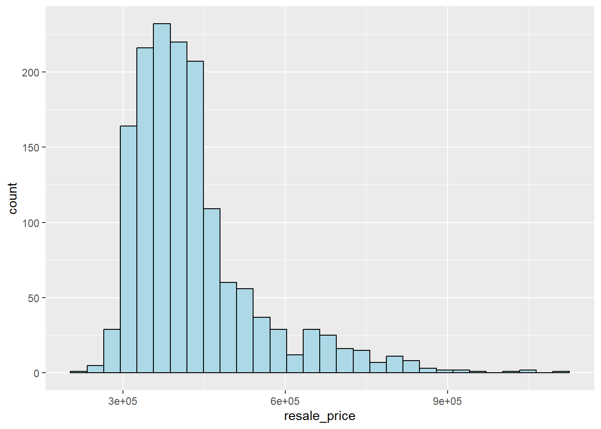
The histogram shows that:
Most resale prices cluster between $280,000 and $500,000.
The distribution has a long right tail, meaning a smaller number of flats have very high prices (e.g., > $700,000).
This means the majority of HDB flats are moderately priced, but a few high-value flats (executive units, larger flats, central locations) pull the tail to the right.
Statistically, the skewed dsitribution can be normalised by using log transformation. The code chunk below is used to derive a new variable called LOG_resale_price by using a log transformation on the variable resale_price. It is performed using mutate() of dplyr package.
HDB_sample <- HDB_sample %>%
mutate(`LOG_resale_price` = log(resale_price))ggplot(data=HDB_sample,
aes(x=`LOG_resale_price`)) +
geom_histogram(bins=30,
color="black",
fill="light blue")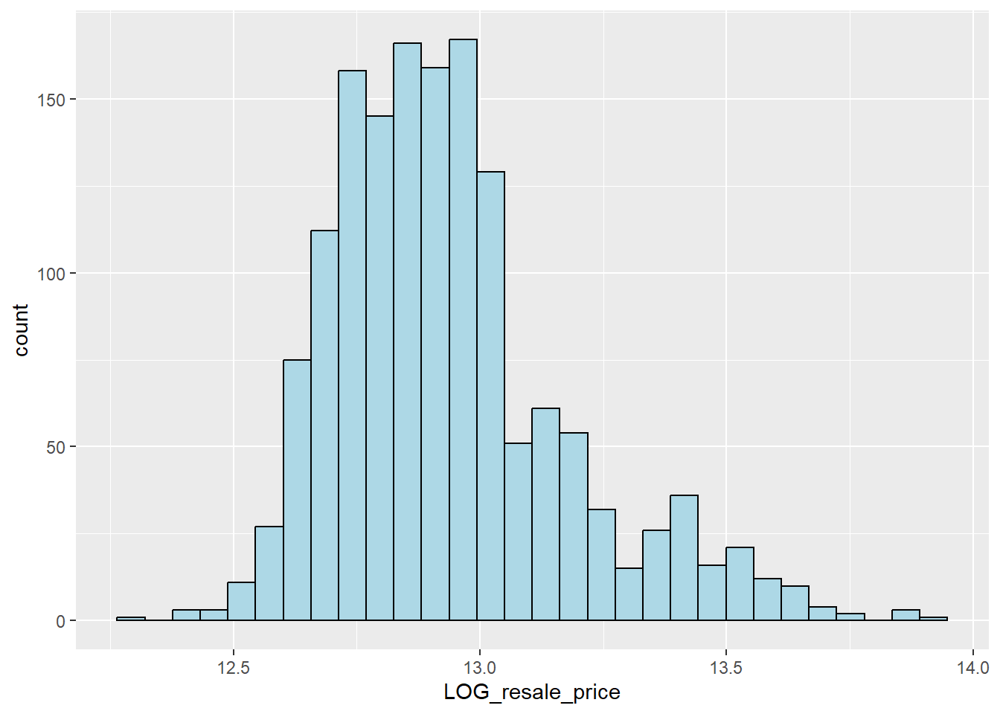
colnames(HDB_sample) [1] "resale_price" "floor_area_sqm"
[3] "storey_order" "remaining_lease_mths"
[5] "PROX_CBD" "PROX_ELDERLYCARE"
[7] "PROX_HAWKER" "PROX_MRT"
[9] "PROX_PARK" "PROX_GOOD_PRISCH"
[11] "PROX_MALL" "PROX_CHAS"
[13] "PROX_SUPERMARKET" "WITHIN_350M_KINDERGARTEN"
[15] "WITHIN_350M_CHILDCARE" "WITHIN_350M_BUS"
[17] "WITHIN_1KM_PRISCH" "geometry"
[19] "LOG_resale_price" Multiple Histogram Plots distribution of variables
Small multiple histograms (also known as trellis plot) by using ggarrange() of ggpubr package.
The code chunk below is used to create 12 histograms. Then, ggarrange() is used to organised these histogram into a 3 columns by 4 rows small multiple plot.
floor_area_sqm <- ggplot(data=HDB_sample,
aes(x= `floor_area_sqm`)) +
geom_histogram(bins=20,
color="black",
fill="light blue")
remaining_lease_mths <- ggplot(data=HDB_sample,
aes(x= `remaining_lease_mths`)) +
geom_histogram(bins=20,
color="black",
fill="light blue")
PROX_HAWKER <- ggplot(data=HDB_sample,
aes(x= `PROX_HAWKER`)) +
geom_histogram(bins=20,
color="black",
fill="light blue")
PROX_MRT <- ggplot(data=HDB_sample,
aes(x= `PROX_MRT`)) +
geom_histogram(bins=20,
color="black",
fill="light blue")
PROX_ELDERLYCARE <- ggplot(data=HDB_sample,
aes(x= `PROX_ELDERLYCARE`)) +
geom_histogram(bins=20,
color="black",
fill="light blue")
WITHIN_350M_CHILDCARE <- ggplot(data=HDB_sample,
aes(x= `WITHIN_350M_CHILDCARE`)) +
geom_histogram(bins=20,
color="black",
fill="light blue")
PROX_SUPERMARKET <- ggplot(data=HDB_sample,
aes(x= `PROX_SUPERMARKET`)) +
geom_histogram(bins=20,
color="black",
fill="light blue")
PROX_GOOD_PRISCH <- ggplot(data=HDB_sample,
aes(x= `PROX_GOOD_PRISCH`)) +
geom_histogram(bins=20,
color="black",
fill="light blue")
PROX_MALL <- ggplot(data=HDB_sample,
aes(x= `PROX_MALL`)) +
geom_histogram(bins=20,
color="black",
fill="light blue")
PROX_PARK <- ggplot(data=HDB_sample,
aes(x= `PROX_PARK`)) +
geom_histogram(bins=20,
color="black",
fill="light blue")
WITHIN_350M_KINDERGARTEN <- ggplot(data=HDB_sample,
aes(x= `WITHIN_350M_KINDERGARTEN`)) +
geom_histogram(bins=20,
color="black",
fill="light blue")
PROX_CBD <- ggplot(data=HDB_sample,
aes(x= `PROX_CBD`)) +
geom_histogram(bins=20,
color="black",
fill="light blue")
ggarrange(floor_area_sqm, remaining_lease_mths, PROX_HAWKER, PROX_MRT,
PROX_ELDERLYCARE, WITHIN_350M_CHILDCARE,
PROX_SUPERMARKET, PROX_GOOD_PRISCH, PROX_MALL,
PROX_PARK, WITHIN_350M_KINDERGARTEN, PROX_CBD,
ncol = 3, nrow = 4)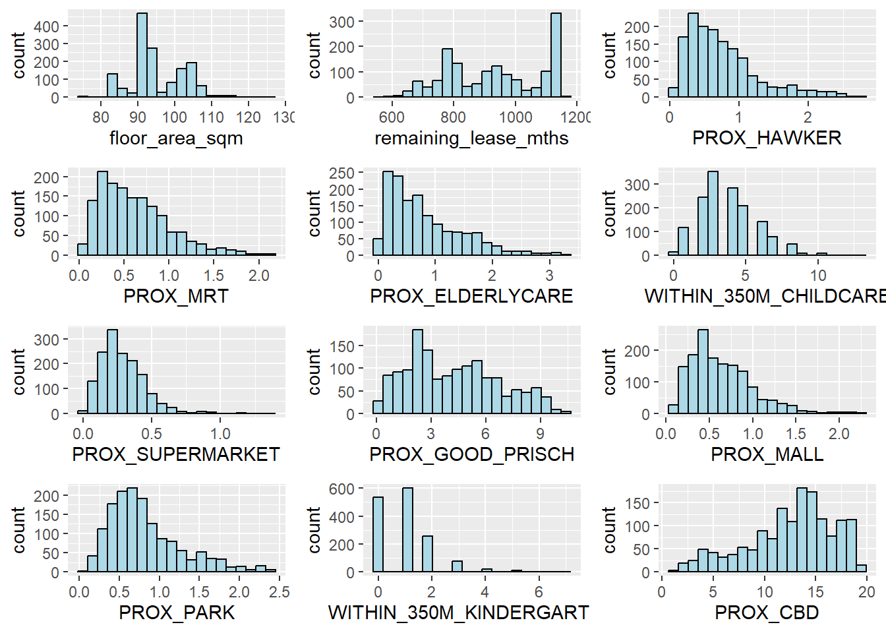
Drawing Statistical Point Map
setwd("C:/Users/HT Chen/Desktop/ISSS626/ISSS626-wp/Hands-on_Ex/Hands-on_Ex07")
mpsz = st_read(dsn = "data/geospatial",
layer = "MP14_SUBZONE_WEB_PL")Reading layer `MP14_SUBZONE_WEB_PL' from data source
`C:\Users\HT Chen\Desktop\ISSS626\ISSS626-wp\Hands-on_Ex\Hands-on_Ex07\data\geospatial'
using driver `ESRI Shapefile'
Simple feature collection with 323 features and 15 fields
Geometry type: MULTIPOLYGON
Dimension: XY
Bounding box: xmin: 2667.538 ymin: 15748.72 xmax: 56396.44 ymax: 50256.33
Projected CRS: SVY21mpsz_svy21 <- st_transform(mpsz, 3414)tmap_mode("plot")Point Symbol Map
tm_shape(mpsz_svy21)+
tm_polygons() +
tm_shape(HDB_sample) +
tm_dots(fill = "resale_price",
fill_alpha = 0.6,
size = 0.5,
fill.scale = tm_scale_intervals(
style="quantile")) +
tm_view(set_zoom_limits = c(11,14))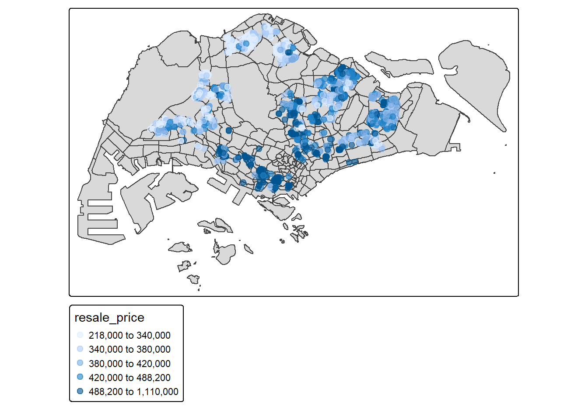
Hedonic Pricing Modelling in R
Simple Linear Regression Method(Conventional OLS Not Recommended) for Demonstration
HDB_sample_slr <- lm(formula=resale_price ~ floor_area_sqm,
data = HDB_sample)summary(HDB_sample_slr)
Call:
lm(formula = resale_price ~ floor_area_sqm, data = HDB_sample)
Residuals:
Min 1Q Median 3Q Max
-216070 -75935 -28011 29476 680233
Coefficients:
Estimate Std. Error t value Pr(>|t|)
(Intercept) 530879.5 41160.1 12.898 <2e-16 ***
floor_area_sqm -1075.7 431.3 -2.494 0.0127 *
---
Signif. codes: 0 '***' 0.001 '**' 0.01 '*' 0.05 '.' 0.1 ' ' 1
Residual standard error: 118200 on 1498 degrees of freedom
Multiple R-squared: 0.004136, Adjusted R-squared: 0.003471
F-statistic: 6.221 on 1 and 1498 DF, p-value: 0.01273ggplot(data=HDB_sample,
aes(x=`floor_area_sqm`, y=`resale_price`)) +
geom_point() +
geom_smooth(method = lm)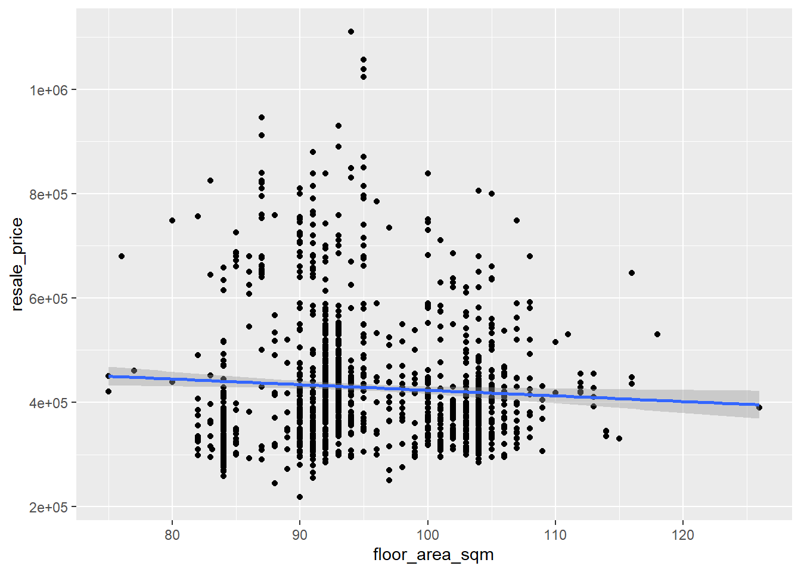
Multiple Linear Regression Method
Multicollinearity Check
colnames(HDB_sample) [1] "resale_price" "floor_area_sqm"
[3] "storey_order" "remaining_lease_mths"
[5] "PROX_CBD" "PROX_ELDERLYCARE"
[7] "PROX_HAWKER" "PROX_MRT"
[9] "PROX_PARK" "PROX_GOOD_PRISCH"
[11] "PROX_MALL" "PROX_CHAS"
[13] "PROX_SUPERMARKET" "WITHIN_350M_KINDERGARTEN"
[15] "WITHIN_350M_CHILDCARE" "WITHIN_350M_BUS"
[17] "WITHIN_1KM_PRISCH" "geometry"
[19] "LOG_resale_price" str(HDB_sample)sf [1,500 × 19] (S3: sf/tbl_df/tbl/data.frame)
$ resale_price : num [1:1500] 405000 500888 385000 485000 418000 ...
$ floor_area_sqm : num [1:1500] 109 87 103 93 93 84 93 103 103 105 ...
$ storey_order : int [1:1500] 1 2 2 2 5 1 3 2 2 3 ...
$ remaining_lease_mths : num [1:1500] 787 662 821 1147 1134 ...
$ PROX_CBD : num [1:1500] 11.73 6.56 14.32 13.93 18.19 ...
$ PROX_ELDERLYCARE : num [1:1500] 0.429 0.611 0.761 0.234 2.499 ...
$ PROX_HAWKER : num [1:1500] 0.481 0.283 0.859 0.97 0.601 ...
$ PROX_MRT : num [1:1500] 0.742 1.944 0.939 0.101 0.86 ...
$ PROX_PARK : num [1:1500] 1.262 0.212 0.646 1.102 0.21 ...
$ PROX_GOOD_PRISCH : num [1:1500] 0.285 0.395 2.677 4.337 8.567 ...
$ PROX_MALL : num [1:1500] 0.519 0.446 0.862 0.634 0.849 ...
$ PROX_CHAS : num [1:1500] 0.0761 0.1932 0.4805 0.0457 0.1108 ...
$ PROX_SUPERMARKET : num [1:1500] 0.3011 0.2594 0.5729 0.0457 0.5656 ...
$ WITHIN_350M_KINDERGARTEN: int [1:1500] 1 2 0 0 0 0 1 1 1 1 ...
$ WITHIN_350M_CHILDCARE : int [1:1500] 3 3 4 4 2 6 3 5 3 2 ...
$ WITHIN_350M_BUS : int [1:1500] 11 3 4 11 6 11 7 8 4 7 ...
$ WITHIN_1KM_PRISCH : int [1:1500] 4 3 3 4 2 5 5 2 3 2 ...
$ geometry :sfc_POINT of length 1500; first list element: 'XY' num [1:2] 39422 37094
$ LOG_resale_price : num [1:1500] 12.9 13.1 12.9 13.1 12.9 ...
- attr(*, "sf_column")= chr "geometry"
- attr(*, "agr")= Factor w/ 3 levels "constant","aggregate",..: NA NA NA NA NA NA NA NA NA NA ...
..- attr(*, "names")= chr [1:18] "resale_price" "floor_area_sqm" "storey_order" "remaining_lease_mths" ...head(HDB_sample)Simple feature collection with 6 features and 18 fields
Geometry type: POINT
Dimension: XY
Bounding box: xmin: 27363.82 ymin: 31715.43 xmax: 41466.83 ymax: 48032.52
Projected CRS: SVY21 / Singapore TM
# A tibble: 6 × 19
resale_price floor_area_sqm storey_order remaining_lease_mths PROX_CBD
<dbl> <dbl> <int> <dbl> <dbl>
1 405000 109 1 787 11.7
2 500888 87 2 662 6.56
3 385000 103 2 821 14.3
4 485000 93 2 1147 13.9
5 418000 93 5 1134 18.2
6 288000 84 1 770 16.3
# ℹ 14 more variables: PROX_ELDERLYCARE <dbl>, PROX_HAWKER <dbl>,
# PROX_MRT <dbl>, PROX_PARK <dbl>, PROX_GOOD_PRISCH <dbl>, PROX_MALL <dbl>,
# PROX_CHAS <dbl>, PROX_SUPERMARKET <dbl>, WITHIN_350M_KINDERGARTEN <int>,
# WITHIN_350M_CHILDCARE <int>, WITHIN_350M_BUS <int>,
# WITHIN_1KM_PRISCH <int>, geometry <POINT [m]>, LOG_resale_price <dbl>HDB_sample_num <- HDB_sample %>%
st_drop_geometry() %>%
select(where(is.numeric))str(HDB_sample_num)tibble [1,500 × 18] (S3: tbl_df/tbl/data.frame)
$ resale_price : num [1:1500] 405000 500888 385000 485000 418000 ...
$ floor_area_sqm : num [1:1500] 109 87 103 93 93 84 93 103 103 105 ...
$ storey_order : int [1:1500] 1 2 2 2 5 1 3 2 2 3 ...
$ remaining_lease_mths : num [1:1500] 787 662 821 1147 1134 ...
$ PROX_CBD : num [1:1500] 11.73 6.56 14.32 13.93 18.19 ...
$ PROX_ELDERLYCARE : num [1:1500] 0.429 0.611 0.761 0.234 2.499 ...
$ PROX_HAWKER : num [1:1500] 0.481 0.283 0.859 0.97 0.601 ...
$ PROX_MRT : num [1:1500] 0.742 1.944 0.939 0.101 0.86 ...
$ PROX_PARK : num [1:1500] 1.262 0.212 0.646 1.102 0.21 ...
$ PROX_GOOD_PRISCH : num [1:1500] 0.285 0.395 2.677 4.337 8.567 ...
$ PROX_MALL : num [1:1500] 0.519 0.446 0.862 0.634 0.849 ...
$ PROX_CHAS : num [1:1500] 0.0761 0.1932 0.4805 0.0457 0.1108 ...
$ PROX_SUPERMARKET : num [1:1500] 0.3011 0.2594 0.5729 0.0457 0.5656 ...
$ WITHIN_350M_KINDERGARTEN: int [1:1500] 1 2 0 0 0 0 1 1 1 1 ...
$ WITHIN_350M_CHILDCARE : int [1:1500] 3 3 4 4 2 6 3 5 3 2 ...
$ WITHIN_350M_BUS : int [1:1500] 11 3 4 11 6 11 7 8 4 7 ...
$ WITHIN_1KM_PRISCH : int [1:1500] 4 3 3 4 2 5 5 2 3 2 ...
$ LOG_resale_price : num [1:1500] 12.9 13.1 12.9 13.1 12.9 ...corrplot(cor(HDB_sample_num[, 1:18]),
diag = FALSE,
order = "AOE",
tl.pos = "td",
tl.cex = 0.6,
number.cex = 0.4,
method = "number",
type = "upper")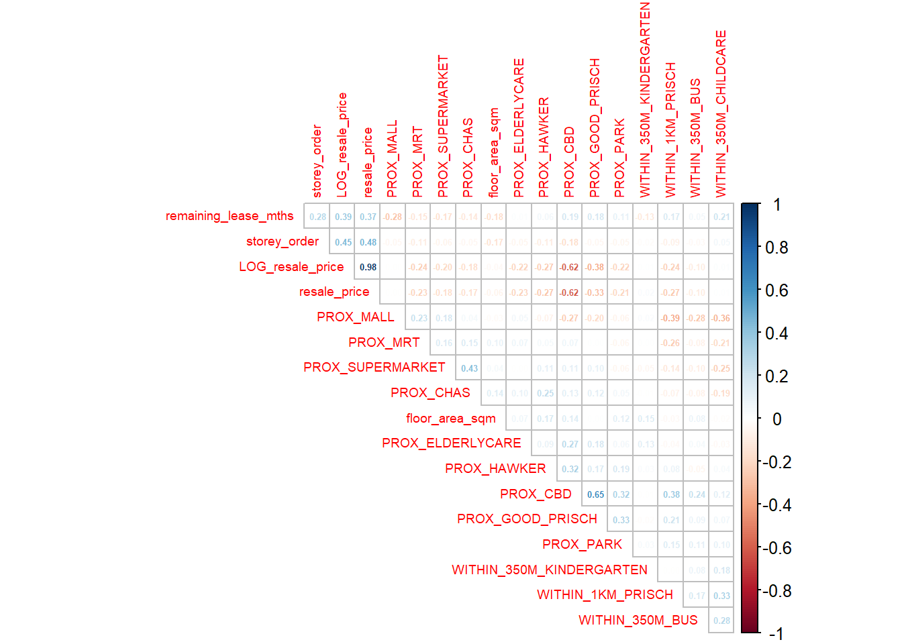
1. Very Strong Correlations
🔵 LOG_resale_price vs resale_price (~0.98)
Expected, because log price is a transformation of the actual resale price.
They should not be used together in regression (perfect multicollinearity).
2. Moderate Positive Relationships
🔵 Prox_CBD vs Prox_GOOD_PRISCH(~0.65)
HDB flats closer to the CBD also tend to be closer to good primary schools.
This reflects location-based clustering:
The central region has both higher prestige schools and shorter distances to the CBD.
🔵 Prox_CBD vs resale_price (~0.62)
The farther a flat is from the CBD, the lower its resale price tends to be
Filter the Multicollinearity Factor
HDB_sample <- HDB_sample %>% select(-PROX_CBD)colnames(HDB_sample) [1] "resale_price" "floor_area_sqm"
[3] "storey_order" "remaining_lease_mths"
[5] "PROX_ELDERLYCARE" "PROX_HAWKER"
[7] "PROX_MRT" "PROX_PARK"
[9] "PROX_GOOD_PRISCH" "PROX_MALL"
[11] "PROX_CHAS" "PROX_SUPERMARKET"
[13] "WITHIN_350M_KINDERGARTEN" "WITHIN_350M_CHILDCARE"
[15] "WITHIN_350M_BUS" "WITHIN_1KM_PRISCH"
[17] "geometry" "LOG_resale_price" Building a hedonic pricing model using multiple linear regression method
HDB_sample_mlr <- lm(
formula = resale_price ~ floor_area_sqm + storey_order +
remaining_lease_mths + PROX_ELDERLYCARE + PROX_HAWKER +
PROX_MRT + PROX_PARK +
PROX_GOOD_PRISCH + PROX_MALL +
PROX_CHAS + PROX_SUPERMARKET +
WITHIN_350M_KINDERGARTEN + WITHIN_350M_CHILDCARE +
WITHIN_350M_BUS + WITHIN_1KM_PRISCH,
data=HDB_sample)
summary(HDB_sample_mlr)
Call:
lm(formula = resale_price ~ floor_area_sqm + storey_order + remaining_lease_mths +
PROX_ELDERLYCARE + PROX_HAWKER + PROX_MRT + PROX_PARK + PROX_GOOD_PRISCH +
PROX_MALL + PROX_CHAS + PROX_SUPERMARKET + WITHIN_350M_KINDERGARTEN +
WITHIN_350M_CHILDCARE + WITHIN_350M_BUS + WITHIN_1KM_PRISCH,
data = HDB_sample)
Residuals:
Min 1Q Median 3Q Max
-213969 -43835 -5738 36034 346900
Coefficients:
Estimate Std. Error t value Pr(>|t|)
(Intercept) 174861.10 34344.17 5.091 4.01e-07 ***
floor_area_sqm 1955.08 293.17 6.669 3.63e-11 ***
storey_order 17533.19 1063.84 16.481 < 2e-16 ***
remaining_lease_mths 302.83 14.54 20.833 < 2e-16 ***
PROX_ELDERLYCARE -31238.50 3124.85 -9.997 < 2e-16 ***
PROX_HAWKER -39741.25 4026.06 -9.871 < 2e-16 ***
PROX_MRT -62292.89 5329.61 -11.688 < 2e-16 ***
PROX_PARK -28194.94 4719.43 -5.974 2.89e-09 ***
PROX_GOOD_PRISCH -10356.76 892.59 -11.603 < 2e-16 ***
PROX_MALL -2453.56 6497.02 -0.378 0.706
PROX_CHAS 4948.91 20109.21 0.246 0.806
PROX_SUPERMARKET -61515.19 14175.78 -4.339 1.52e-05 ***
WITHIN_350M_KINDERGARTEN 11243.76 2054.96 5.472 5.23e-08 ***
WITHIN_350M_CHILDCARE -1963.41 1199.48 -1.637 0.102
WITHIN_350M_BUS -2831.83 715.11 -3.960 7.85e-05 ***
WITHIN_1KM_PRISCH -21899.68 1486.35 -14.734 < 2e-16 ***
---
Signif. codes: 0 '***' 0.001 '**' 0.01 '*' 0.05 '.' 0.1 ' ' 1
Residual standard error: 75090 on 1484 degrees of freedom
Multiple R-squared: 0.6021, Adjusted R-squared: 0.5981
F-statistic: 149.7 on 15 and 1484 DF, p-value: < 2.2e-16Revising the model
HDB_sample_mlr1 <- lm(
formula = resale_price ~ floor_area_sqm + storey_order +
remaining_lease_mths + PROX_ELDERLYCARE + PROX_HAWKER +
PROX_MRT + PROX_PARK +
PROX_GOOD_PRISCH + PROX_SUPERMARKET +
WITHIN_350M_KINDERGARTEN +
WITHIN_350M_BUS + WITHIN_1KM_PRISCH,
data=HDB_sample)
summary(HDB_sample_mlr1)
Call:
lm(formula = resale_price ~ floor_area_sqm + storey_order + remaining_lease_mths +
PROX_ELDERLYCARE + PROX_HAWKER + PROX_MRT + PROX_PARK + PROX_GOOD_PRISCH +
PROX_SUPERMARKET + WITHIN_350M_KINDERGARTEN + WITHIN_350M_BUS +
WITHIN_1KM_PRISCH, data = HDB_sample)
Residuals:
Min 1Q Median 3Q Max
-212902 -43896 -5952 35331 340892
Coefficients:
Estimate Std. Error t value Pr(>|t|)
(Intercept) 168674.79 32366.21 5.211 2.14e-07 ***
floor_area_sqm 1978.39 291.07 6.797 1.54e-11 ***
storey_order 17508.40 1061.87 16.488 < 2e-16 ***
remaining_lease_mths 300.22 14.15 21.222 < 2e-16 ***
PROX_ELDERLYCARE -30952.98 3100.87 -9.982 < 2e-16 ***
PROX_HAWKER -39783.01 3943.94 -10.087 < 2e-16 ***
PROX_MRT -61656.34 5260.21 -11.721 < 2e-16 ***
PROX_PARK -28400.02 4691.49 -6.054 1.79e-09 ***
PROX_GOOD_PRISCH -10295.45 882.50 -11.666 < 2e-16 ***
PROX_SUPERMARKET -57030.62 12922.92 -4.413 1.09e-05 ***
WITHIN_350M_KINDERGARTEN 10525.61 2009.44 5.238 1.86e-07 ***
WITHIN_350M_BUS -3031.21 684.96 -4.425 1.03e-05 ***
WITHIN_1KM_PRISCH -22311.90 1404.39 -15.887 < 2e-16 ***
---
Signif. codes: 0 '***' 0.001 '**' 0.01 '*' 0.05 '.' 0.1 ' ' 1
Residual standard error: 75090 on 1487 degrees of freedom
Multiple R-squared: 0.6013, Adjusted R-squared: 0.5981
F-statistic: 186.9 on 12 and 1487 DF, p-value: < 2.2e-16Multi Linear Regression Model Analysis
✔️ p < 0.05 ( or )*
Moderate evidence the variable is significant.
Independent variables are statistically significant like floor_area_sqm, storey_order, remaining_lease_mths, prox_elderlycare, prox_hawker, prox_mrt, prox_park, prox_good_prisch, prox_mall, prox_chas, prox_supermarket, within_350m_kindergarten, within_350m_bus, within_1km_prisch
❌ p > 0.05 (no stars)
The variable is not statistically significant like prox_mall, prox_chas and within_350m_childcare →
It does not have meaningful explanation in this model.
Adjusted R²
Adjusted R² tells how much of the variation in resale price is explained by the model after penalizing for the number of variables.
Interpretation:
The model explains ~59.8% of the variation in HDB resale prices.
This is moderately strong for housing data.
It means that structural and locational factors together account for about 60% of price differences, while the remaining 40% may due to:
unobserved buyer preferences,
unit condition,
renovation works,
noise or congestion levels,
location-specific externalities not included in the model.
Preparing Publication Quality Table: gtsummary method
tbl_regression(HDB_sample_mlr1, intercept = TRUE)| Characteristic | Beta | 95% CI | p-value |
|---|---|---|---|
| (Intercept) | 168,675 | 105,187, 232,163 | <0.001 |
| floor_area_sqm | 1,978 | 1,407, 2,549 | <0.001 |
| storey_order | 17,508 | 15,425, 19,591 | <0.001 |
| remaining_lease_mths | 300 | 272, 328 | <0.001 |
| PROX_ELDERLYCARE | -30,953 | -37,036, -24,870 | <0.001 |
| PROX_HAWKER | -39,783 | -47,519, -32,047 | <0.001 |
| PROX_MRT | -61,656 | -71,975, -51,338 | <0.001 |
| PROX_PARK | -28,400 | -37,603, -19,197 | <0.001 |
| PROX_GOOD_PRISCH | -10,295 | -12,027, -8,564 | <0.001 |
| PROX_SUPERMARKET | -57,031 | -82,380, -31,682 | <0.001 |
| WITHIN_350M_KINDERGARTEN | 10,526 | 6,584, 14,467 | <0.001 |
| WITHIN_350M_BUS | -3,031 | -4,375, -1,688 | <0.001 |
| WITHIN_1KM_PRISCH | -22,312 | -25,067, -19,557 | <0.001 |
| Abbreviation: CI = Confidence Interval | |||
tbl_regression(HDB_sample_mlr1,
intercept = TRUE) %>%
add_glance_source_note(
label = list(sigma ~ "\U03C3"),
include = c(r.squared, adj.r.squared,
AIC, statistic,
p.value, sigma))| Characteristic | Beta | 95% CI | p-value |
|---|---|---|---|
| (Intercept) | 168,675 | 105,187, 232,163 | <0.001 |
| floor_area_sqm | 1,978 | 1,407, 2,549 | <0.001 |
| storey_order | 17,508 | 15,425, 19,591 | <0.001 |
| remaining_lease_mths | 300 | 272, 328 | <0.001 |
| PROX_ELDERLYCARE | -30,953 | -37,036, -24,870 | <0.001 |
| PROX_HAWKER | -39,783 | -47,519, -32,047 | <0.001 |
| PROX_MRT | -61,656 | -71,975, -51,338 | <0.001 |
| PROX_PARK | -28,400 | -37,603, -19,197 | <0.001 |
| PROX_GOOD_PRISCH | -10,295 | -12,027, -8,564 | <0.001 |
| PROX_SUPERMARKET | -57,031 | -82,380, -31,682 | <0.001 |
| WITHIN_350M_KINDERGARTEN | 10,526 | 6,584, 14,467 | <0.001 |
| WITHIN_350M_BUS | -3,031 | -4,375, -1,688 | <0.001 |
| WITHIN_1KM_PRISCH | -22,312 | -25,067, -19,557 | <0.001 |
| Abbreviation: CI = Confidence Interval | |||
| R² = 0.601; Adjusted R² = 0.598; AIC = 37,951; Statistic = 187; p-value = <0.001; σ = 75,091 | |||
Regression Diagnostics
Multicollinearity test
Multicollinearity occurs when independent variables are not truly independent, meaning a change in one is associated with a change in another. This makes it hard for the model to isolate each variable’s influence on the outcome.
Performing a multicollinearity test is crucial in multiple linear regression because it ensures the reliability and interpretability of the model’s results. High multicollinearity, where independent variables are highly correlated, inflates the variance of the estimated coefficients, making them unstable, unreliable, and difficult to interpret. This instability can lead to misleading statistical conclusions, such as a variable appearing statistically insignificant when it is not.
In the code chunk below, the check_collinearity() of performance package is used to test if there are sign of multicollinearity.
check_collinearity(HDB_sample_mlr1)# Check for Multicollinearity
Low Correlation
Term VIF VIF 95% CI adj. VIF Tolerance Tolerance 95% CI
floor_area_sqm 1.13 [1.08, 1.21] 1.06 0.89 [0.83, 0.93]
storey_order 1.16 [1.10, 1.24] 1.08 0.87 [0.81, 0.91]
remaining_lease_mths 1.26 [1.20, 1.35] 1.12 0.79 [0.74, 0.84]
PROX_ELDERLYCARE 1.07 [1.03, 1.16] 1.04 0.93 [0.86, 0.97]
PROX_HAWKER 1.12 [1.08, 1.21] 1.06 0.89 [0.83, 0.93]
PROX_MRT 1.13 [1.08, 1.21] 1.06 0.89 [0.83, 0.93]
PROX_PARK 1.19 [1.13, 1.27] 1.09 0.84 [0.79, 0.88]
PROX_GOOD_PRISCH 1.28 [1.21, 1.36] 1.13 0.78 [0.73, 0.83]
PROX_SUPERMARKET 1.12 [1.07, 1.20] 1.06 0.89 [0.83, 0.94]
WITHIN_350M_KINDERGARTEN 1.06 [1.03, 1.15] 1.03 0.94 [0.87, 0.97]
WITHIN_350M_BUS 1.07 [1.03, 1.16] 1.04 0.93 [0.86, 0.97]
WITHIN_1KM_PRISCH 1.21 [1.15, 1.29] 1.10 0.83 [0.77, 0.87]mlr.vif <- check_collinearity(HDB_sample_mlr1)
plot(mlr.vif)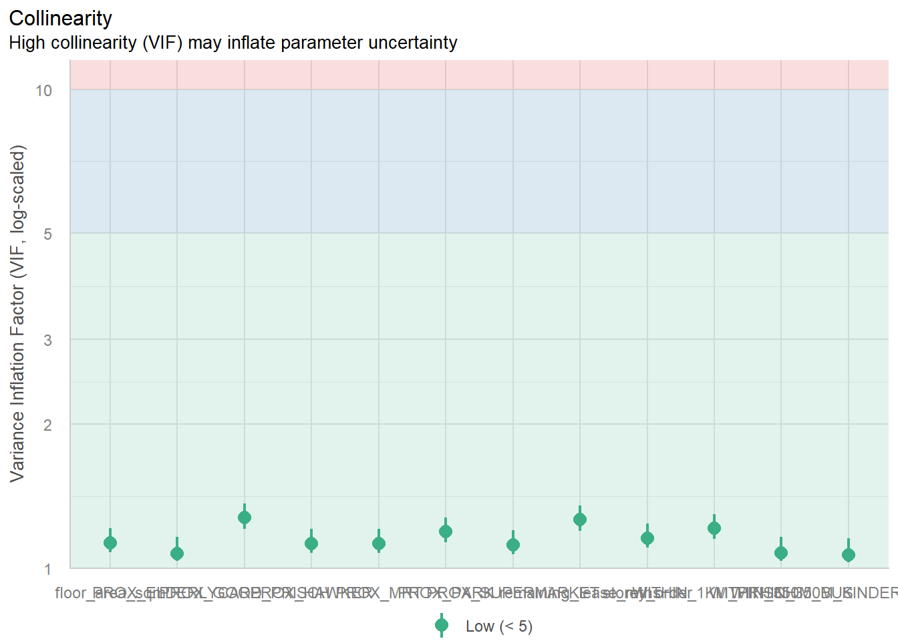
Since the VIF of the independent variables are less than 10. We can safely conclude that there are no sign of multicollinearity among the independent variables.
Test for Non-Linearity
check_model(HDB_sample_mlr1,
check = "linearity")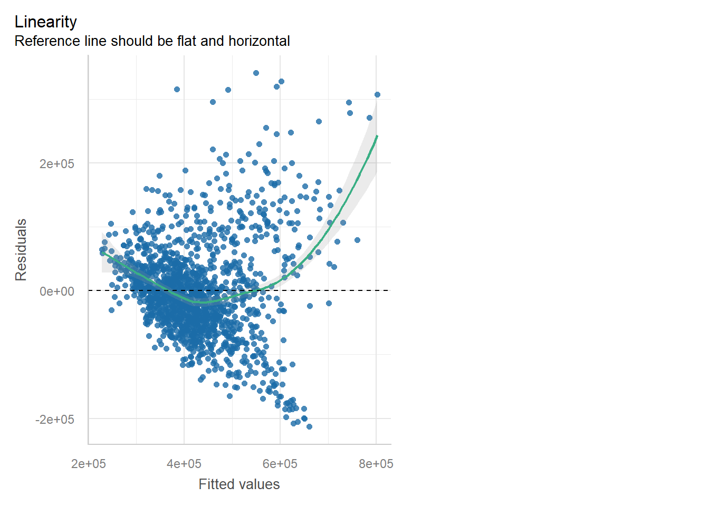
The figure above reveals that most of the data poitns are scattered around the 0 line, hence we can safely conclude that the relationships between the dependent variable and independent variables are linear.
Test for Normality Assumption
The normality assumption test for multiple linear regression checks if the model’s residuals (the differences between observed and predicted values) are normally distributed. This is crucial for accurate hypothesis testing and confidence intervals. To test this, you can use visual methods like histograms and Q-Q plots of the residuals, or conduct statistical tests like Shapiro-Wilk test and Kolmogorov-Smirnov test.
check_normality(HDB_sample_mlr1)Warning: Non-normality of residuals detected (p < .001).The print above reveals that the p-value of the normality assumption test is less than alpha value of 0.05. Hence we reject the normality assumption at 95% confident level.
Instead of showing the test statistic, plot() of see package can be used to plot a the output of check_normality() for visual inspection as shown below.
plot(check_normality(HDB_sample_mlr1),
type = "qq")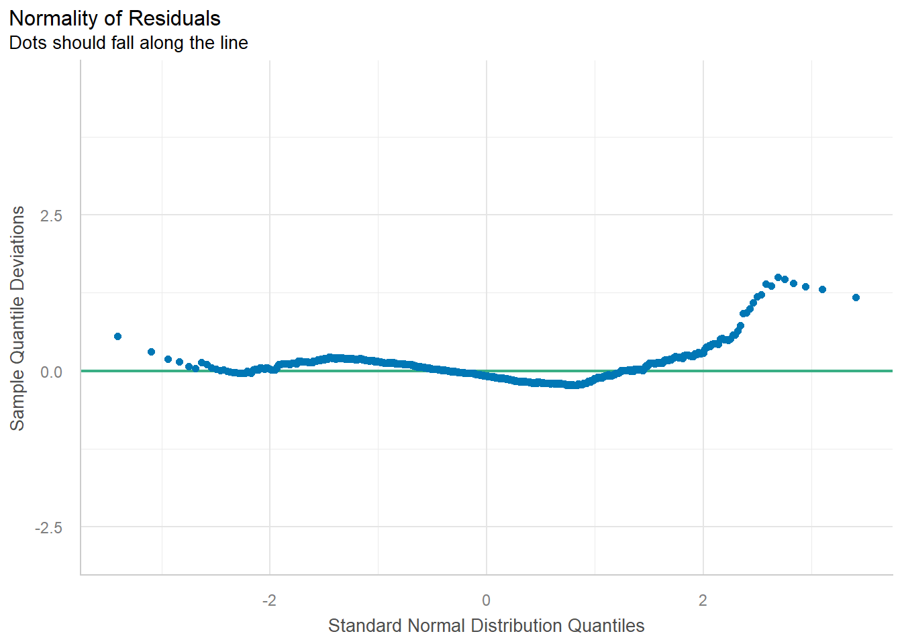
From the Q-Q plot, the points on the far right curve above the line and This means the model produces large positive residuals for some observations.
Interpretation,
There are flats where the model underpredicts price and possibly high-end flats or outliers(rare higher price flats)
check_model(HDB_sample_mlr1,
check= "normality")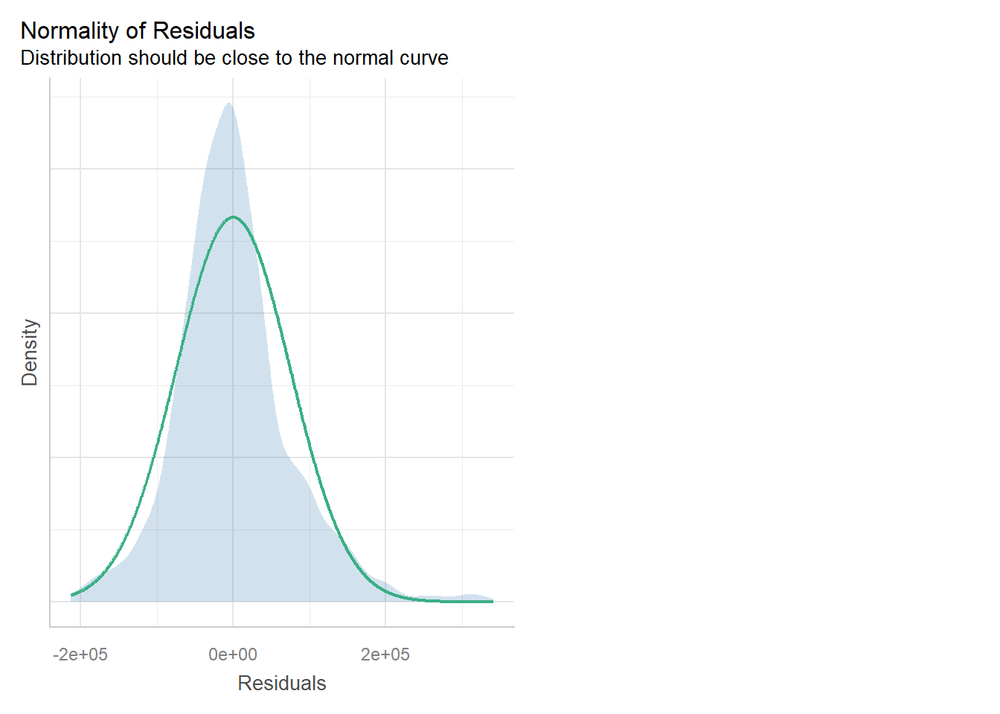
The figure reveals that the residual of the multiple linear regression model is resemble normal distribution.
Testing for Spatial Autocorrelation
Because a hedonic pricing model is built using geographically referenced data, it is essential to assess spatial autocorrelation before interpreting the results. Traditional regression techniques, such as ordinary least squares (OLS), assume that observations are independent of one another. Spatial data frequently violates this assumption because nearby locations tend to share similar characteristics.
Spatial autocorrelation refers to the degree to which a variable is correlated with itself across space.
Positive spatial autocorrelation occurs when nearby locations exhibit similar values.
Negative spatial autocorrelation occurs when nearby values are dissimilar.
Failing to account for spatial autocorrelation in a regression model can result in several serious issues:
Biased and inefficient coefficient estimates: When autocorrelation exists, standard errors become unreliable, which affects hypothesis testing and inflates the apparent significance of variables.
Misleading p-values: OLS cannot distinguish true variable effects from underlying spatial patterns, causing inaccurate inference.
Model misspecification: Significant spatial autocorrelation in the residuals suggests that key spatial processes or variables have been omitted. Spatially patterned residuals often reveal where the model is under- or over-predicting.
Higher Type I error rates: Researchers may incorrectly conclude that a variable is significant when it is not.
To formally assess this, a Moran’s I test can be applied to the regression residuals. A statistically significant Moran’s I indicates that the model has not fully captured the underlying spatial structure.
Before conducting the test, the residuals from the hedonic model must be extracted and saved as a separate spatial data frame, ensuring they retain their geographic coordinates for spatial autocorrelation analysis.
mlr.output <- as.data.frame(HDB_sample_mlr1$residuals)HDB_sample_1 <- cbind(HDB_sample,
HDB_sample_mlr1$residuals) %>%
rename(`MLR_RES` = `HDB_sample_mlr1.residuals`)use tmap package to display the distribution of the residuals on an interactive map.
tmap_mode("plot")tm_shape(mpsz_svy21) +
tm_polygons(fill_alpha = 0.4) +
tm_shape(HDB_sample_1) +
tm_dots(
fill = "MLR_RES",
size = 0.7,
col = "black",
fill.scale = tm_scale(
n = 10,
values = rev(
brewer.pal(11, "RdBu")),
style = "quantile",
midpoint = NA),
fill.legend = tm_legend(title = "Residuals")
) +
tm_title("LM Residuals (Quantile Classification)") +
tm_layout(legend.outside = TRUE) +
tm_view(set_zoom_limits = c(11,14))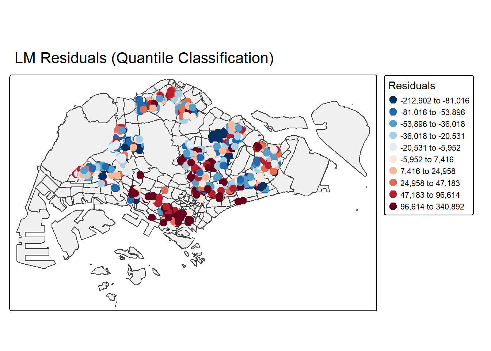
colnames(HDB_sample_1) [1] "resale_price" "floor_area_sqm"
[3] "storey_order" "remaining_lease_mths"
[5] "PROX_ELDERLYCARE" "PROX_HAWKER"
[7] "PROX_MRT" "PROX_PARK"
[9] "PROX_GOOD_PRISCH" "PROX_MALL"
[11] "PROX_CHAS" "PROX_SUPERMARKET"
[13] "WITHIN_350M_KINDERGARTEN" "WITHIN_350M_CHILDCARE"
[15] "WITHIN_350M_BUS" "WITHIN_1KM_PRISCH"
[17] "LOG_resale_price" "MLR_RES"
[19] "geometry" compute the distance-based weight matrix by using st_dist_band() function of sfdep
HDB_sample_2 <- HDB_sample_1 %>%
mutate(
nb = st_dist_band(
st_geometry(geometry),
upper = 2000),
wt = st_weights(
nb, style = "W"),
.before = 1) set.seed(1234)
global_moran_perm(
HDB_sample_2$MLR_RES,
nb = HDB_sample_2$nb,
wt = HDB_sample_2$wt,
alternative = "two.sided",
nsim = 499)
Monte-Carlo simulation of Moran I
data: x
weights: listw
number of simulations + 1: 500
statistic = 0.40952, observed rank = 500, p-value < 2.2e-16
alternative hypothesis: two.sidedMoran’s I statistic = 0.40952
This value measures spatial autocorrelation in your regression residuals.
Interpret the magnitude:
0.41 is high for residuals
Typical Moran’s I values range from -1 to +1
0 → random pattern
+1 → strong clustering
-1 → strong dispersion (checkerboard pattern)
There is strong positive spatial autocorrelation in the residuals.
Nearby HDB flats have similar residual values (clusters of overprediction or underprediction).
p-value < 2.2e-16:
The spatial autocorrelation is highly statistically significant.
This is not due to random chance.
Observed rank = 500 (highest possible):
Out of all 499 random permutations + 1 observed value
Your observed Moran’s I = largest value
None of the random simulations came close to your actual autocorrelation
This strengthens the evidence that the spatial clustering is real and strong.
Since the Observed Global Moran I = 0.14389 which is greater than 0, we can infer than the residuals resemble cluster distribution.
Building Hedonic Pricing Models using GWmodel
Modelling hedonic pricing using both the fixed and adaptive bandwidth schemes
Building Fixed Bandwidth GWR Model
Computing fixed bandwith
In the code chunk below, the bw.gwr() function from the GWModel package is used to determine the optimal fixed bandwidth for the GWR model. Because the argument adaptive = FALSE is specified, the function will compute a fixed (distance-based) bandwidth rather than an adaptive one.
There are two main methods available for selecting the optimal bandwidth:
Cross-validation (CV)
Corrected Akaike Information Criterion (AICc)
In this example, the stopping rule for bandwidth selection is determined using the method specified in the approach argument.
bw_fixed <- bw.gwr(
formula = resale_price ~ floor_area_sqm + storey_order +
remaining_lease_mths + PROX_ELDERLYCARE +
PROX_MRT + PROX_PARK +
PROX_GOOD_PRISCH + PROX_SUPERMARKET + PROX_MALL +
WITHIN_350M_KINDERGARTEN + PROX_CHAS +
WITHIN_350M_BUS + WITHIN_1KM_PRISCH,
data=HDB_sample_2,
approach="CV",
kernel="gaussian",
adaptive=FALSE,
longlat=FALSE)Fixed bandwidth: 19127.87 CV score: 8.519883e+12
Fixed bandwidth: 11824.04 CV score: 7.611516e+12
Fixed bandwidth: 7310.02 CV score: 5.823607e+12
Fixed bandwidth: 4520.205 CV score: 4.084202e+12
Fixed bandwidth: 2796.004 CV score: 3.046563e+12
Fixed bandwidth: 1730.39 CV score: 2.348023e+12
Fixed bandwidth: 1071.804 CV score: 2.155032e+12
Fixed bandwidth: 664.7752 CV score: 2.573514e+12
Fixed bandwidth: 1323.361 CV score: 2.181079e+12
Fixed bandwidth: 916.3327 CV score: 2.190123e+12
Fixed bandwidth: 1167.89 CV score: 2.152987e+12
Fixed bandwidth: 1227.275 CV score: 2.159522e+12
Fixed bandwidth: 1131.188 CV score: 2.151907e+12
Fixed bandwidth: 1108.505 CV score: 2.152397e+12
Fixed bandwidth: 1145.207 CV score: 2.152046e+12
Fixed bandwidth: 1122.524 CV score: 2.15199e+12
Fixed bandwidth: 1136.543 CV score: 2.15192e+12
Fixed bandwidth: 1127.879 CV score: 2.151923e+12
Fixed bandwidth: 1133.234 CV score: 2.151906e+12
Fixed bandwidth: 1134.498 CV score: 2.151909e+12
Fixed bandwidth: 1132.452 CV score: 2.151905e+12
Fixed bandwidth: 1131.97 CV score: 2.151905e+12
Fixed bandwidth: 1132.751 CV score: 2.151905e+12
Fixed bandwidth: 1132.268 CV score: 2.151905e+12
Fixed bandwidth: 1132.566 CV score: 2.151905e+12
Fixed bandwidth: 1132.382 CV score: 2.151905e+12
Fixed bandwidth: 1132.496 CV score: 2.151905e+12
Fixed bandwidth: 1132.426 CV score: 2.151905e+12
Fixed bandwidth: 1132.469 CV score: 2.151905e+12
Fixed bandwidth: 1132.442 CV score: 2.151905e+12
Fixed bandwidth: 1132.436 CV score: 2.151905e+12
Fixed bandwidth: 1132.446 CV score: 2.151905e+12
Fixed bandwidth: 1132.44 CV score: 2.151905e+12
Fixed bandwidth: 1132.444 CV score: 2.151905e+12
Fixed bandwidth: 1132.441 CV score: 2.151905e+12
Fixed bandwidth: 1132.443 CV score: 2.151905e+12
Fixed bandwidth: 1132.442 CV score: 2.151905e+12
Fixed bandwidth: 1132.442 CV score: 2.151905e+12
Fixed bandwidth: 1132.442 CV score: 2.151905e+12
Fixed bandwidth: 1132.442 CV score: 2.151905e+12
Fixed bandwidth: 1132.442 CV score: 2.151905e+12
Fixed bandwidth: 1132.442 CV score: 2.151905e+12 The result shows that the recommended bandwidth is 1132.564
GWModel method - fixed bandwith
gwr.fixed <- gwr.basic(
formula = resale_price ~ floor_area_sqm + storey_order +
remaining_lease_mths + PROX_ELDERLYCARE +
PROX_MRT + PROX_PARK +
PROX_GOOD_PRISCH + PROX_SUPERMARKET + PROX_MALL +
WITHIN_350M_KINDERGARTEN + PROX_CHAS +
WITHIN_350M_BUS + WITHIN_1KM_PRISCH,
data=HDB_sample_2,
bw=bw_fixed,
kernel = 'gaussian',
longlat = FALSE)gwr.fixed ***********************************************************************
* Package GWmodel *
***********************************************************************
Program starts at: 2025-11-16 18:05:16.527186
Call:
gwr.basic(formula = resale_price ~ floor_area_sqm + storey_order +
remaining_lease_mths + PROX_ELDERLYCARE + PROX_MRT + PROX_PARK +
PROX_GOOD_PRISCH + PROX_SUPERMARKET + PROX_MALL + WITHIN_350M_KINDERGARTEN +
PROX_CHAS + WITHIN_350M_BUS + WITHIN_1KM_PRISCH, data = HDB_sample_2,
bw = bw_fixed, kernel = "gaussian", longlat = FALSE)
Dependent (y) variable: resale_price
Independent variables: floor_area_sqm storey_order remaining_lease_mths PROX_ELDERLYCARE PROX_MRT PROX_PARK PROX_GOOD_PRISCH PROX_SUPERMARKET PROX_MALL WITHIN_350M_KINDERGARTEN PROX_CHAS WITHIN_350M_BUS WITHIN_1KM_PRISCH
Number of data points: 1500
***********************************************************************
* Results of Global Regression *
***********************************************************************
Call:
lm(formula = formula, data = data)
Residuals:
Min 1Q Median 3Q Max
-197183 -46827 -7092 35736 356022
Coefficients:
Estimate Std. Error t value Pr(>|t|)
(Intercept) 198958.16 35197.72 5.653 1.89e-08 ***
floor_area_sqm 1577.29 300.11 5.256 1.69e-07 ***
storey_order 18415.34 1094.49 16.826 < 2e-16 ***
remaining_lease_mths 286.66 14.88 19.270 < 2e-16 ***
PROX_ELDERLYCARE -32427.42 3222.54 -10.063 < 2e-16 ***
PROX_MRT -63177.91 5493.48 -11.501 < 2e-16 ***
PROX_PARK -34312.67 4835.53 -7.096 1.98e-12 ***
PROX_GOOD_PRISCH -10775.90 920.80 -11.703 < 2e-16 ***
PROX_SUPERMARKET -64683.97 14550.53 -4.445 9.42e-06 ***
PROX_MALL 2606.36 6597.33 0.395 0.69285
WITHIN_350M_KINDERGARTEN 9995.79 2076.41 4.814 1.63e-06 ***
PROX_CHAS -28465.35 20335.22 -1.400 0.16178
WITHIN_350M_BUS -2321.02 723.99 -3.206 0.00138 **
WITHIN_1KM_PRISCH -23157.05 1507.48 -15.361 < 2e-16 ***
---Significance stars
Signif. codes: 0 '***' 0.001 '**' 0.01 '*' 0.05 '.' 0.1 ' ' 1
Residual standard error: 77590 on 1486 degrees of freedom
Multiple R-squared: 0.5747
Adjusted R-squared: 0.571
F-statistic: 154.4 on 13 and 1486 DF, p-value: < 2.2e-16
***Extra Diagnostic information
Residual sum of squares: 8.945069e+12
Sigma(hat): 77274.46
AIC: 38050.17
AICc: 38050.49
BIC: 36739.57
***********************************************************************
* Results of Geographically Weighted Regression *
***********************************************************************
*********************Model calibration information*********************
Kernel function: gaussian
Fixed bandwidth: 1132.442
Regression points: the same locations as observations are used.
Distance metric: Euclidean distance metric is used.
****************Summary of GWR coefficient estimates:******************
Min. 1st Qu. Median 3rd Qu.
Intercept -899210.032 -244013.930 -74007.707 23548.030
floor_area_sqm -695.928 1267.579 1801.300 3256.712
storey_order 3108.654 8757.838 10505.818 12544.018
remaining_lease_mths 113.874 325.632 393.255 494.935
PROX_ELDERLYCARE -155839.621 -24606.736 -6301.139 12368.179
PROX_MRT -313668.286 -90523.843 -48858.123 -19367.651
PROX_PARK -265218.816 -31975.369 -12169.843 43.009
PROX_GOOD_PRISCH -79887.731 -16736.277 -6107.395 2670.141
PROX_SUPERMARKET -173999.788 -63946.079 -8189.165 24865.856
PROX_MALL -232837.412 -24475.154 4908.584 59762.733
WITHIN_350M_KINDERGARTEN -15700.486 -5429.653 -1949.314 3415.666
PROX_CHAS -215762.658 -41795.232 -5805.588 41691.848
WITHIN_350M_BUS -11096.036 -1501.346 1266.494 2920.215
WITHIN_1KM_PRISCH -61917.056 -3991.781 1281.154 5250.049
Max.
Intercept 527954.1
floor_area_sqm 7361.2
storey_order 25218.7
remaining_lease_mths 715.5
PROX_ELDERLYCARE 66743.5
PROX_MRT 212416.3
PROX_PARK 118282.2
PROX_GOOD_PRISCH 57712.8
PROX_SUPERMARKET 208544.5
PROX_MALL 143519.4
WITHIN_350M_KINDERGARTEN 31474.1
PROX_CHAS 302784.0
WITHIN_350M_BUS 19222.4
WITHIN_1KM_PRISCH 16436.4
************************Diagnostic information*************************
Number of data points: 1500
Effective number of parameters (2trace(S) - trace(S'S)): 388.7369
Effective degrees of freedom (n-2trace(S) + trace(S'S)): 1111.263
AICc (GWR book, Fotheringham, et al. 2002, p. 61, eq 2.33): 35565.27
AIC (GWR book, Fotheringham, et al. 2002,GWR p. 96, eq. 4.22): 35082.21
BIC (GWR book, Fotheringham, et al. 2002,GWR p. 61, eq. 2.34): 35561.47
Residual sum of squares: 1.023729e+12
R-square value: 0.9513231
Adjusted R-square value: 0.9342799
***********************************************************************
Program stops at: 2025-11-16 18:05:17.085437 GWModel Method - Fixed Bandwidth Analysis
Adjusted R-squared (GWR): 0.9343
Interpretation:
The GWR model explains 93.4% of the variation in resale prices.
This is a very large improvement over the global OLS model (Adj R² ≈ 0.571).
This tells us:
Spatial variation is extremely important in explaining HDB prices.
The determinants of price vary significantly across space.
The global OLS model was missing spatial structure and averaging out effects.
Interpretation:
Almost all variables have p < 0.001, meaning they are strongly associated with resale prices on average.
However, global p-values no longer reflect local significance.
In GWR:
The importance of variables changes across space.
From GWR output:
AIC: 38050.17 AICc: 38050 BIC: 36739.57Interpretation:
AIC dropped by almost 3,000 points.
This is an extremely large improvement in model fit.
AICc and BIC also show major reduction → confirms the model is superior even after penalizing complexity.
1. PROX_MRT
Very wide coefficient range
Large negative coefficient→ farther from MRT reduces price strongly
Positive coefficient→ being close from MRT increases price
Regional variation is expected
Singapore has strong spatial differences in:
transport reliance
noise tolerance
income levels
travel patterns
2. PROX_PARK
Large negative → distance from parks reduces value
Especially near large parks:
Bishan–Ang Mo Kio Park
East Coast Park
West Coast Park
Jurong Lake Gardens
Bukit Batok Nature Park
These are major green amenities.
Positive values occur in areas:
where small parks have limited amenity value
where parks bring noise (sports courts)
lower-end parks or small pocket parks add little value
perceived safety concerns in some neighbourhood parks
3. PROX_GOOD_PRISCH
Negative coefficients → closer to good school = higher value
Strong effect in places like Bukit Timah, Bishan, Marine Parade, Queenstown
High competition for school enrollment
Positive coefficients → weaker or adverse school effect
Likely in areas:
with oversupply of schools
where elite schools are far
where accessibility to schools is not a priority for the demographic
4. PROX_SUPERMARKET
Negative → far from supermarket reduces value
Daily convenience is critical for many families.
Positive → further is better
This can happen when:
supermarkets bring congestion
noise from loading bays
smells (wet markets)
high-traffic areas around malls
5. WITHIN_350M_KINDERGARTEN
Positive coefficients → proximity to childcare highly valued
Especially in:
young towns (Punggol, Sengkang)
family-heavy estates
newer precincts with more young buyers
Negative coefficients → oversupply or negative externalities
too many childcare centres = no competitive advantage
noise during drop-off/pick-up
not valued by singles or elderly households
Building Adaptive Bandwidth GWR Model
Calibrate the gwr-based hedonic pricing model by using adaptive bandwidth approach
Computing the adaptive bandwidth
bw.adaptive <- bw.gwr(
formula = resale_price ~ floor_area_sqm + storey_order +
remaining_lease_mths + PROX_ELDERLYCARE + PROX_HAWKER +
PROX_MRT + PROX_PARK +
PROX_GOOD_PRISCH + PROX_SUPERMARKET + PROX_MALL +
WITHIN_350M_KINDERGARTEN + WITHIN_350M_CHILDCARE+
WITHIN_350M_BUS + WITHIN_1KM_PRISCH,
data=HDB_sample_2,
approach="CV",
kernel="gaussian",
adaptive=TRUE,
longlat=FALSE)Adaptive bandwidth: 934 CV score: 7.345954e+12
Adaptive bandwidth: 585 CV score: 6.638723e+12
Adaptive bandwidth: 368 CV score: 5.716319e+12
Adaptive bandwidth: 235 CV score: 4.817613e+12
Adaptive bandwidth: 152 CV score: 3.754333e+12
Adaptive bandwidth: 101 CV score: 3.057121e+12
Adaptive bandwidth: 69 CV score: 2.500718e+12
Adaptive bandwidth: 50 CV score: 2.265048e+12
Adaptive bandwidth: 37 CV score: 2.07659e+12
Adaptive bandwidth: 30 CV score: 1.938054e+12
Adaptive bandwidth: 24 CV score: 1.873995e+12
Adaptive bandwidth: 22 CV score: 1.871444e+12
Adaptive bandwidth: 19 CV score: 1.859432e+12
Adaptive bandwidth: 19 CV score: 1.859432e+12 colnames(HDB_sample_2) [1] "nb" "wt"
[3] "resale_price" "floor_area_sqm"
[5] "storey_order" "remaining_lease_mths"
[7] "PROX_ELDERLYCARE" "PROX_HAWKER"
[9] "PROX_MRT" "PROX_PARK"
[11] "PROX_GOOD_PRISCH" "PROX_MALL"
[13] "PROX_CHAS" "PROX_SUPERMARKET"
[15] "WITHIN_350M_KINDERGARTEN" "WITHIN_350M_CHILDCARE"
[17] "WITHIN_350M_BUS" "WITHIN_1KM_PRISCH"
[19] "LOG_resale_price" "MLR_RES"
[21] "geometry" gwr.adaptive <- gwr.basic(
formula = resale_price ~ floor_area_sqm + storey_order +
remaining_lease_mths + PROX_ELDERLYCARE + PROX_HAWKER +
PROX_MRT + PROX_PARK +
PROX_GOOD_PRISCH + PROX_SUPERMARKET + PROX_MALL +
WITHIN_350M_KINDERGARTEN + WITHIN_350M_CHILDCARE +
WITHIN_350M_BUS + WITHIN_1KM_PRISCH,
data=HDB_sample_2,
bw=bw.adaptive,
kernel = 'gaussian',
adaptive=TRUE,
longlat = FALSE)gwr.adaptive ***********************************************************************
* Package GWmodel *
***********************************************************************
Program starts at: 2025-11-16 18:05:21.966113
Call:
gwr.basic(formula = resale_price ~ floor_area_sqm + storey_order +
remaining_lease_mths + PROX_ELDERLYCARE + PROX_HAWKER + PROX_MRT +
PROX_PARK + PROX_GOOD_PRISCH + PROX_SUPERMARKET + PROX_MALL +
WITHIN_350M_KINDERGARTEN + WITHIN_350M_CHILDCARE + WITHIN_350M_BUS +
WITHIN_1KM_PRISCH, data = HDB_sample_2, bw = bw.adaptive,
kernel = "gaussian", adaptive = TRUE, longlat = FALSE)
Dependent (y) variable: resale_price
Independent variables: floor_area_sqm storey_order remaining_lease_mths PROX_ELDERLYCARE PROX_HAWKER PROX_MRT PROX_PARK PROX_GOOD_PRISCH PROX_SUPERMARKET PROX_MALL WITHIN_350M_KINDERGARTEN WITHIN_350M_CHILDCARE WITHIN_350M_BUS WITHIN_1KM_PRISCH
Number of data points: 1500
***********************************************************************
* Results of Global Regression *
***********************************************************************
Call:
lm(formula = formula, data = data)
Residuals:
Min 1Q Median 3Q Max
-213809 -43646 -5816 35942 346490
Coefficients:
Estimate Std. Error t value Pr(>|t|)
(Intercept) 175137.98 34314.88 5.104 3.76e-07 ***
floor_area_sqm 1960.34 292.29 6.707 2.82e-11 ***
storey_order 17545.95 1062.24 16.518 < 2e-16 ***
remaining_lease_mths 302.51 14.48 20.898 < 2e-16 ***
PROX_ELDERLYCARE -31177.56 3114.04 -10.012 < 2e-16 ***
PROX_HAWKER -39556.00 3953.82 -10.005 < 2e-16 ***
PROX_MRT -62200.16 5314.59 -11.704 < 2e-16 ***
PROX_PARK -28143.90 4713.38 -5.971 2.94e-09 ***
PROX_GOOD_PRISCH -10348.16 891.62 -11.606 < 2e-16 ***
PROX_SUPERMARKET -60222.16 13161.99 -4.575 5.15e-06 ***
PROX_MALL -2587.80 6472.03 -0.400 0.6893
WITHIN_350M_KINDERGARTEN 11243.28 2054.31 5.473 5.19e-08 ***
WITHIN_350M_CHILDCARE -1991.23 1193.76 -1.668 0.0955 .
WITHIN_350M_BUS -2838.55 714.37 -3.974 7.42e-05 ***
WITHIN_1KM_PRISCH -21902.15 1485.85 -14.741 < 2e-16 ***
---Significance stars
Signif. codes: 0 '***' 0.001 '**' 0.01 '*' 0.05 '.' 0.1 ' ' 1
Residual standard error: 75070 on 1485 degrees of freedom
Multiple R-squared: 0.6021
Adjusted R-squared: 0.5983
F-statistic: 160.5 on 14 and 1485 DF, p-value: < 2.2e-16
***Extra Diagnostic information
Residual sum of squares: 8.368925e+12
Sigma(hat): 74744.45
AIC: 37952.3
AICc: 37952.67
BIC: 36654.33
***********************************************************************
* Results of Geographically Weighted Regression *
***********************************************************************
*********************Model calibration information*********************
Kernel function: gaussian
Adaptive bandwidth: 19 (number of nearest neighbours)
Regression points: the same locations as observations are used.
Distance metric: Euclidean distance metric is used.
****************Summary of GWR coefficient estimates:******************
Min. 1st Qu. Median 3rd Qu.
Intercept -1461502.51 -280584.46 -72395.58 87296.19
floor_area_sqm -15359.15 1100.87 1905.37 3065.08
storey_order 1075.11 8097.08 10492.70 13475.95
remaining_lease_mths -779.78 308.74 403.85 538.37
PROX_ELDERLYCARE -237382.79 -31202.29 -112.08 24470.46
PROX_HAWKER -348704.34 -36777.32 -6455.83 33462.54
PROX_MRT -527532.25 -91872.48 -54685.29 -21835.89
PROX_PARK -320212.37 -41248.48 -14448.56 11463.93
PROX_GOOD_PRISCH -629922.19 -21254.39 -7275.81 7814.52
PROX_SUPERMARKET -199784.26 -48454.19 -7886.86 35577.55
PROX_MALL -236467.45 -31046.32 4177.78 49531.78
WITHIN_350M_KINDERGARTEN -38032.01 -7463.18 -939.10 5026.04
WITHIN_350M_CHILDCARE -14422.00 -2477.60 610.34 2979.40
WITHIN_350M_BUS -13815.72 -2125.10 508.36 2709.40
WITHIN_1KM_PRISCH -57769.06 -5648.51 -388.40 4954.41
Max.
Intercept 3725297.89
floor_area_sqm 8482.45
storey_order 22981.72
remaining_lease_mths 840.69
PROX_ELDERLYCARE 258606.43
PROX_HAWKER 606013.73
PROX_MRT 183378.47
PROX_PARK 493120.98
PROX_GOOD_PRISCH 118635.08
PROX_SUPERMARKET 265747.06
PROX_MALL 437349.70
WITHIN_350M_KINDERGARTEN 33141.87
WITHIN_350M_CHILDCARE 19364.47
WITHIN_350M_BUS 12973.72
WITHIN_1KM_PRISCH 33750.76
************************Diagnostic information*************************
Number of data points: 1500
Effective number of parameters (2trace(S) - trace(S'S)): 603.47
Effective degrees of freedom (n-2trace(S) + trace(S'S)): 896.53
AICc (GWR book, Fotheringham, et al. 2002, p. 61, eq 2.33): 35757.03
AIC (GWR book, Fotheringham, et al. 2002,GWR p. 96, eq. 4.22): 34770.83
BIC (GWR book, Fotheringham, et al. 2002,GWR p. 61, eq. 2.34): 36391.6
Residual sum of squares: 737361937479
R-square value: 0.9649395
Adjusted R-square value: 0.9413133
***********************************************************************
Program stops at: 2025-11-16 18:05:22.931556 GWModel Method - Adaptive Bandwidth Analysis
Adjusted R² = 0.9413
~94% of the variation in resale prices is explained by the locally varying coefficients.
Shows a substantial improvement over:
OLS Adjusted R² ≈ 0.598
GWR fixed Adjusted R² ≈ 0.934
Adaptive GWR fits the data slightly better than fixed GWR due to more flexible neighbourhood structures.
AIC = 34,770.83
AICc = 35,757.03
BIC = 36,391.6
Interpretation:
Adaptive GWR outperforms:
Global OLS (AIC ≈ 38,052)
GWR fixed (AIC ≈ 35,082)
Spatial heterogeneity is strong, and adaptive neighbourhoods capture it better.
Spatial Weighting & Interpretation
Bandwidth = 19 nearest neighbours
→ Each location uses the nearest 19 observations regardless of physical distance.
Dense towns (e.g., Hougang, Ang Mo Kio):
Nearest 19 points are very close → captures fine local variation.Sparse areas (e.g., Sembawang, Tengah):
Nearest 19 points may be further apart → prevents unstable coefficients.
Result:
Adaptive GWR produces more stable and regionally appropriate estimates especially in mixed-density cities like Singapore.
Interpretation of Key Locational Factors (Adaptive GWR)
A. PROX_MRT
➡ Most spatially heterogeneous predictor
Negative areas (up to –527k)
Strong MRT dependence (Yishun, Pasir Ris, Sengkang)
Being far from MRT produces large price penalties
Positive areas (up to +183k)
Being closer to MRT lowers value due to:
train noise & track vibration
crowding at interchange stations
undesirable “busy environment”
preference for car-centric, quieter neighbourhoods (Bukit Timah, Serangoon Gardens)
B. PROX_PARK
Negative coefficients (–320k)
- Properties far from large parks lose value (e.g., Jurong Lake Gardens, EC Park, Bishan Park)
Positive coefficients (+493k)
In some regions, being closer to a park is undesirable:
noise from playgrounds or sports courts
safety concerns at night
small, low-value pocket parks
C. PROX_GOOD_PRISCH
Strongest negative effect (–629k)
Top academic clusters (Bishan, Bukit Timah, Clementi)
Parents compete intensely → huge proximity premium
Positive effect (+118k)
Areas where:
fewer elite schools → lower valuation impact
oversupply of schools reduces differentiation
demographic groups (elderly precincts) do not value school access
D. PROX_SUPERMARKET
Negative
- Daily convenience increases value
Positive (+356k)
Supermarkets and malls become disamenities:
loading bay noise
evening congestion
smells from wet markets
traffic jams around malls
E. WITHIN_350M_KINDERGARTEN
Negative (–38k)
Oversupply in some areas → reduced marginal benefit
Noise during peak hours
Positive (+33k)
Strong positive effect in:
Punggol, Sengkang (family-oriented towns)
HDB new-generation estates
Stable Structural Predictors
These have tight coefficient ranges:
floor_area_sqm
storey_order
remaining_lease_mths
➡ They behave consistently across Singapore → structural rather than locational.
Visualising GWR Output
Converting SDF into sf data.frame
HDB_sample_2_adaptive <- st_as_sf(gwr.adaptive$SDF) %>%
st_transform(crs=3414)glimpse(HDB_sample_2_adaptive)Rows: 1,500
Columns: 52
$ Intercept <dbl> -304572.09, -137701.34, -48766.27, -826053…
$ floor_area_sqm <dbl> 860.26336, 2150.35362, 1593.94973, 7265.75…
$ storey_order <dbl> 5852.124, 14922.992, 15653.546, 17836.652,…
$ remaining_lease_mths <dbl> 442.354266, 555.118129, 369.767880, 545.58…
$ PROX_ELDERLYCARE <dbl> 185486.540, 3983.770, 8290.318, 36421.057,…
$ PROX_HAWKER <dbl> 47101.316, -64050.878, -9827.720, -44499.4…
$ PROX_MRT <dbl> 8597.140, -4281.050, -33157.784, -15567.52…
$ PROX_PARK <dbl> -25465.244, -21943.311, -13339.709, 35913.…
$ PROX_GOOD_PRISCH <dbl> -8016.1559, 4472.5155, -13748.7672, -1310.…
$ PROX_SUPERMARKET <dbl> -63200.098, -41063.147, -21331.537, 22741.…
$ PROX_MALL <dbl> 87115.815, -35119.620, -13717.608, -179664…
$ WITHIN_350M_KINDERGARTEN <dbl> 5808.8849, 17999.6341, 1498.8934, -17031.8…
$ WITHIN_350M_CHILDCARE <dbl> 2443.2789, 3108.8251, -2652.2446, 5529.334…
$ WITHIN_350M_BUS <dbl> 3406.89585, -3173.45763, 2298.73955, 1215.…
$ WITHIN_1KM_PRISCH <dbl> 31000.602, -10360.791, 6075.289, 7985.656,…
$ y <dbl> 405000, 500888, 385000, 485000, 418000, 28…
$ yhat <dbl> 418164.8, 398225.8, 364366.1, 463318.8, 40…
$ residual <dbl> -13164.8437, 102662.1693, 20633.9253, 2168…
$ CV_Score <dbl> 0, 0, 0, 0, 0, 0, 0, 0, 0, 0, 0, 0, 0, 0, …
$ Stud_residual <dbl> -0.64669621, 5.49738879, 0.81766531, 0.916…
$ Intercept_SE <dbl> 173758.47, 35559.09, 81764.35, 639709.29, …
$ floor_area_sqm_SE <dbl> 1038.3776, 300.0288, 501.5581, 6277.5460, …
$ storey_order_SE <dbl> 4129.934, 1424.591, 3305.190, 4395.362, 24…
$ remaining_lease_mths_SE <dbl> 72.70684, 17.84292, 45.45623, 380.41461, 2…
$ PROX_ELDERLYCARE_SE <dbl> 64761.665, 5673.447, 13025.209, 77776.666,…
$ PROX_HAWKER_SE <dbl> 56823.332, 6828.113, 14546.943, 72243.401,…
$ PROX_MRT_SE <dbl> 34615.744, 9596.606, 14997.333, 92731.379,…
$ PROX_PARK_SE <dbl> 40892.994, 6532.201, 21005.582, 91542.433,…
$ PROX_GOOD_PRISCH_SE <dbl> 27774.473, 2035.456, 7295.514, 32428.004, …
$ PROX_SUPERMARKET_SE <dbl> 68740.15, 16455.81, 27736.09, 72100.66, 32…
$ PROX_MALL_SE <dbl> 68799.311, 5479.797, 24118.055, 81131.558,…
$ WITHIN_350M_KINDERGARTEN_SE <dbl> 6471.031, 2716.747, 3326.756, 14373.331, 4…
$ WITHIN_350M_CHILDCARE_SE <dbl> 3937.182, 1448.103, 2894.152, 7020.114, 21…
$ WITHIN_350M_BUS_SE <dbl> 2783.8951, 908.6762, 1503.4744, 4143.4780,…
$ WITHIN_1KM_PRISCH_SE <dbl> 7405.083, 1966.854, 4093.321, 11080.542, 4…
$ Intercept_TV <dbl> -1.7528474, -3.8724655, -0.5964246, -1.291…
$ floor_area_sqm_TV <dbl> 0.82846870, 7.16715763, 3.17799647, 1.1574…
$ storey_order_TV <dbl> 1.4170018, 10.4752794, 4.7360509, 4.058062…
$ remaining_lease_mths_TV <dbl> 6.08408073, 31.11139395, 8.13459107, 1.434…
$ PROX_ELDERLYCARE_TV <dbl> 2.86414099, 0.70217815, 0.63648256, 0.4682…
$ PROX_HAWKER_TV <dbl> 0.82890802, -9.38046505, -0.67558664, -0.6…
$ PROX_MRT_TV <dbl> 0.24835925, -0.44610039, -2.21091207, -0.1…
$ PROX_PARK_TV <dbl> -0.6227288, -3.3592525, -0.6350554, 0.3923…
$ PROX_GOOD_PRISCH_TV <dbl> -0.28861595, 2.19730349, -1.88455089, -0.0…
$ PROX_SUPERMARKET_TV <dbl> -0.91940582, -2.49535789, -0.76908947, 0.3…
$ PROX_MALL_TV <dbl> 1.26623092, -6.40892677, -0.56876925, -2.2…
$ WITHIN_350M_KINDERGARTEN_TV <dbl> 0.89767530, 6.62543674, 0.45055703, -1.184…
$ WITHIN_350M_CHILDCARE_TV <dbl> 0.6205654, 2.1468259, -0.9164151, 0.787641…
$ WITHIN_350M_BUS_TV <dbl> 1.22378744, -3.49239664, 1.52895155, 0.293…
$ WITHIN_1KM_PRISCH_TV <dbl> 4.18639499, -5.26769804, 1.48419586, 0.720…
$ Local_R2 <dbl> 0.9115897, 0.8120387, 0.9124804, 0.9276294…
$ geometry <POINT [m]> POINT (39421.92 37093.57), POINT (36…Visualising local R2
tm_shape(mpsz_svy21)+
tm_polygons(fill_alpha = 0.1) +
tm_shape(HDB_sample_2_adaptive) +
tm_dots(col = "Local_R2",
border.col = "gray60",
border.lwd = 1) +
tm_view(set.zoom.limits = c(11,14))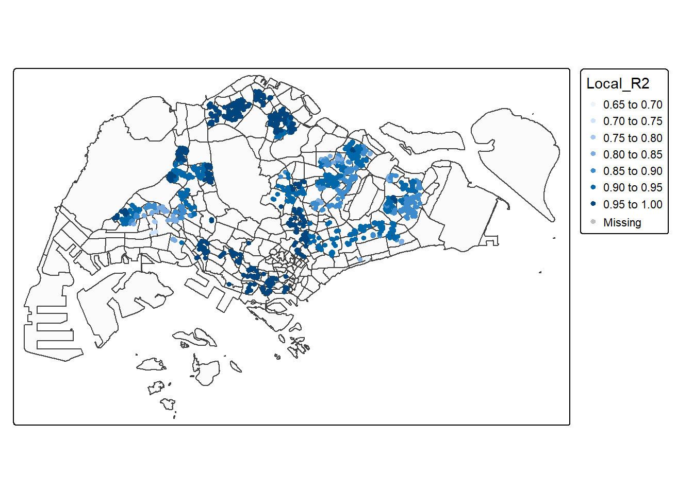
tmap_mode("plot")The map visualizes Local R² values from the Adaptive GWR model, showing how well the model explains resale price variation at each specific location across Singapore. Local R² ranges roughly from 0.65 to 1.00, indicating substantial spatial variability in model performance.
High Local R² Clusters (0.90 – 1.00)
These areas appear as dark blue points, concentrated mainly in:
Central Region
Bishan
Toa Payoh
Bukit Timah
Queenstown
Clementi
Mature Towns (West + East)
Bedok
Ang Mo Kio
Hougang
Jurong East
Interpretation
These are locations where the model captures local price variation extremely well, suggesting:
Strong alignment between housing demand and included variables
Well-defined neighbourhood characteristics
Locational factors (schools, MRT, supermarkets, parks) have consistent and strong effects
These towns:
have stable, long-established amenities
exhibit strong socio-economic patterns (e.g., school demand, transport, green spaces)
show consistent structural behaviour (floor area, storey order)
Visualising coefficient estimates
AREA_SQM_SE <- tm_shape(mpsz_svy21) +
tm_polygons(fill_alpha = 0.1) +
tm_shape(HDB_sample_2_adaptive) +
tm_dots(
fill = "floor_area_sqm_SE", # Use fill= for variable-based colour
col = "gray60", # Border colour
size = 0.07,
lwd = 1
)
AREA_SQM_TV <- tm_shape(mpsz_svy21) +
tm_polygons(fill_alpha = 0.1) +
tm_shape(HDB_sample_2_adaptive) +
tm_dots(
fill = "floor_area_sqm_TV", # Use fill= for variable-based colour
col = "gray60", # Border colour
size = 0.07,
lwd = 1
)
tmap_arrange(
AREA_SQM_SE,
AREA_SQM_TV,
asp = 1,
ncol = 2,
sync = TRUE
)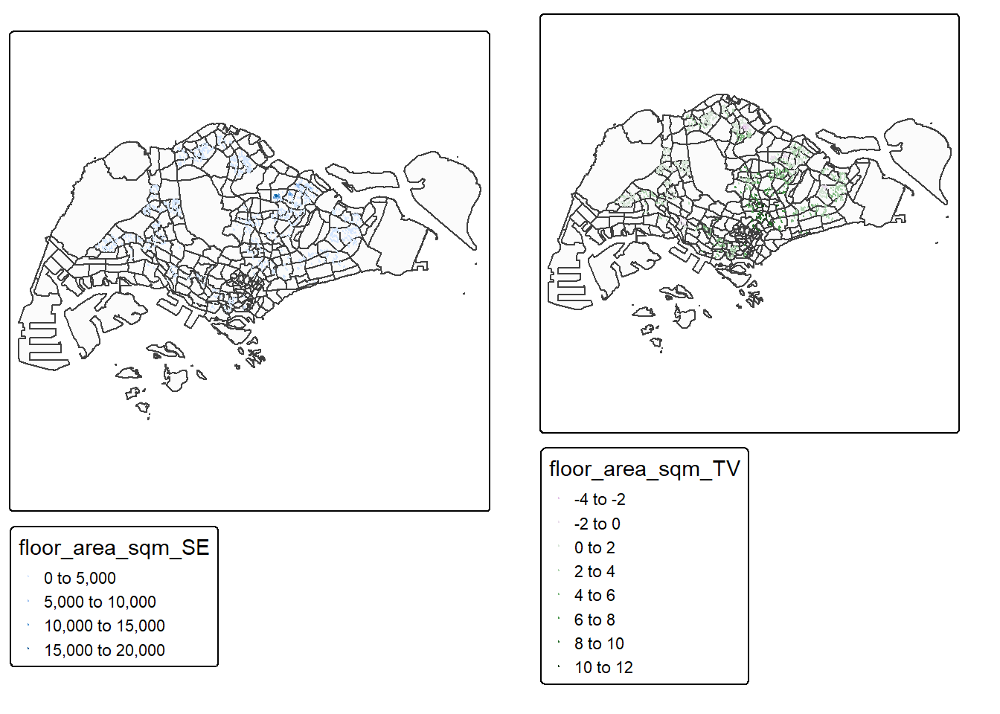
Left Map — floor_area_sqm_SE (Standard Error Map)
This map visualises the standard error of the local regression coefficient for floor_area_sqm across every subzone.
Standard Error (SE) represents the uncertainty or instability of the coefficient estimate in each location.
Key insight
Many areas have very low SE, suggesting that the coefficient for floor area is quite stable across most of Singapore.
High-SE pockets may indicate neighbourhoods where floor area is less predictive of resale price (e.g., areas dominated by newer apartments, mixed housing types, or gentrifying areas).
Right Map — floor_area_sqm_TV (t-value Map)
This map visualises the t-value of the coefficient — a measure of statistical significance.
Key insight
Most significant signals appear in the central and mature towns, indicating:
In these places, unit size strongly influences resale price.
Fringe regions show weaker significance → price may depend more on location or age than on floor area.